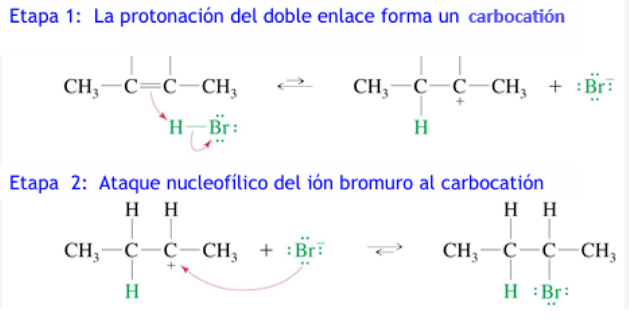
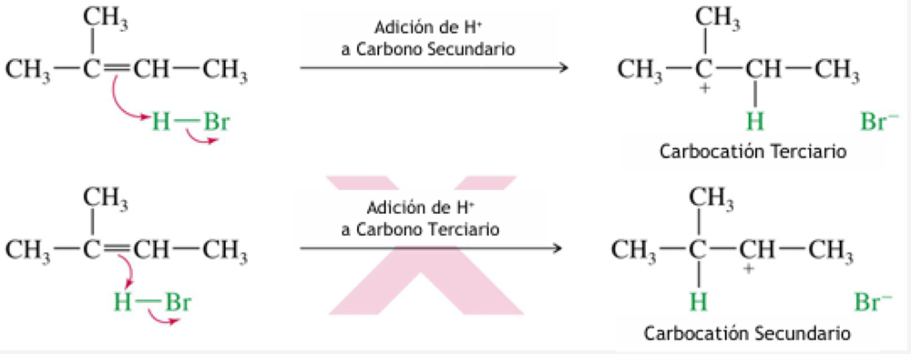
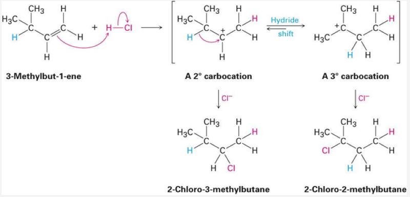
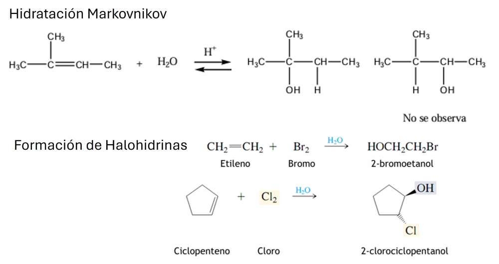
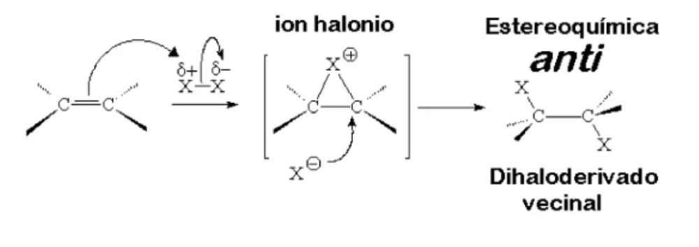
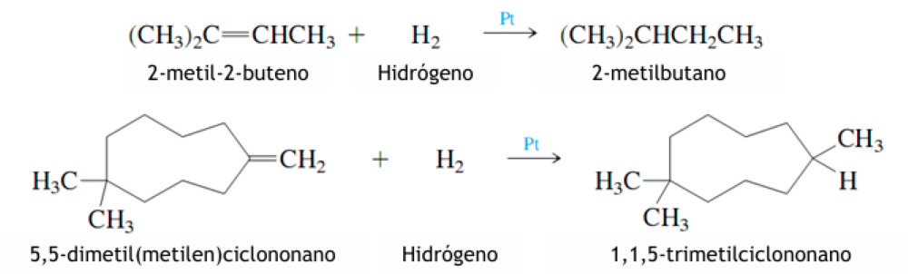
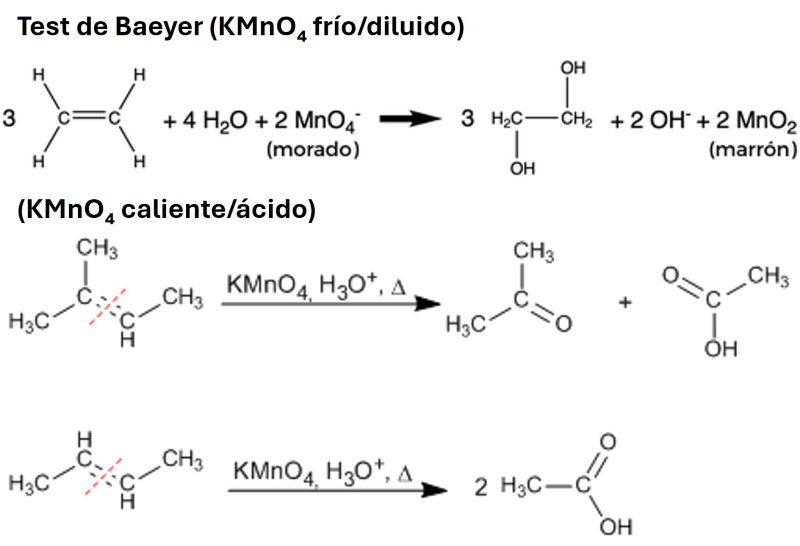
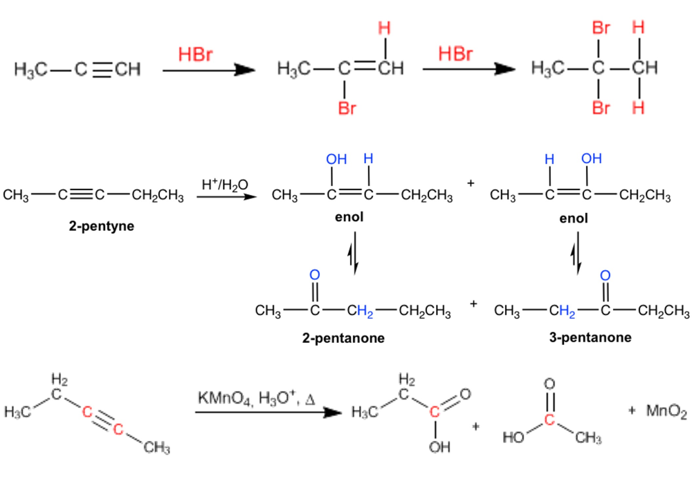

Facultad de Medicina • Química Orgánica
Capítulo 7: Reacciones de Alquenos y Alquinos

El π ataca al H⁺ (electrófilo) y genera el carbocatión; luego Br⁻ (nucleófilo) completa la adición.
Porque la reacción necesita un electrófilo (H⁺) que acepte el par π. El Br⁻ es un nucleófilo: no tiene a qué atacar en un doble enlace rico en electrones.

(CH₃)₂C=CH₂ + HBr → solo (CH₃)₃C–Br: pasa por el carbocatión terciario, más estable; el secundario no se observa.
(a) 2-bromopropano (Markovnikov, catión 2° más estable). (b) 1-bromopropano (anti-Markovnikov, Kharasch, radicales).

Salto de hidruro: un H migra con su par (:H⁻) entre carbonos adyacentes. Salto de alquilo: un grupo alquilo migra con su par de electrones.
La protonación genera un catión secundario en C2; un salto de hidruro 1,2 desde C3 lo convierte en catión terciario, y Br⁻ ataca ahí: 2-bromo-2-metilbutano (adición con transposición).

Hidratación: OH al carbono que da el catión más estable. Halohidrinas: X₂ en agua añade X y OH (anti).
| Alqueno + ácido diluido | Alcohol Markovnikov (producto) |
|---|---|
| 1-metilciclopenteno | 1-metilciclopentanol (catión 3°) |
| 2-fenilpropeno | 2-fenil-2-propanol (catión 3° y bencílico) |
| 1-fenilciclohexeno | 1-fenilciclohexanol (catión bencílico/3°) |
Porque ese carbono protonado genera un catión terciario y bencílico, estabilizado por resonancia con el anillo: Markovnikov = catión más estable.

4-metil-2-penteno + Br₂ → 2,3-dibromo-4-metilpentano (adición anti).

El alqueno adiciona Br₂ (rompe el color rojo del bromo); el alcano, sin luz, no reacciona. Es un test de insaturación clásico.

Ejemplo del capítulo: 3,7-dimetil-1-octeno + KMnO₄/H⁺ → ácido 2,6-dimetilheptanoico (+ CO₂ del =CH₂ terminal).
Ruptura del C=C: el carbono disustituido (CH₃)₂C= da acetona (cetona estable) y el =CH–CH₃ da ácido acético (aldehído oxidado).

Propino + 2 HBr → 2,2-dibromopropano (geminal); propino + H₂O/H⁺ → [enol] → acetona; 2-butino + KMnO₄/H⁺ → 2 CH₃COOH.
Porque el H⁺ se adiciona al carbono terminal generando el catión en C2 (más sustituido, Markovnikov); el enol resultante (2-propenol) tautomeriza a acetona.
Haz clic en cada nodo para desplegar u ocultar sus ramas.
Haz clic en la tarjeta para voltearla y ver la respuesta. Luego califícate con honestidad.
Es la hidrogenación catalítica heterogénea de C=C (Pt/Ni). En la superficie del metal, el intermediario alqueno-metal puede isomerizar (cis → trans) antes de completarse la adición de H₂: hidrogenación parcial = alquenos residuales, muchos en configuración trans.
Con la ruptura oxidativa de alquenos (KMnO₄ caliente/ácido): el C=C se rompe dando fragmentos oxigenados (aldehídos/ácidos como el malondialdehído), que dañan proteínas y ADN. Los antioxidantes detienen la cadena radicalaria.
La oxidación del alqueno por P450 genera un epóxido electrófilo (análogo al ion halonio en reactividad); las bases del ADN, nucleófilos, lo atacan: aducción mutagénico. Oxidación de alquenos + pareja electrófilo/nucleófilo.
El alquino en C17 bloquea la oxidación metabólica de esa posición (los C≡C terminales resisten la oxidación enzimática que sí sufren los C–H/sp³): la molécula persiste activa. Química de alquinos aplicada al diseño de fármacos.
Aumenta la biodisponibilidad oral y la vida media al retardar el metabolismo hepático de primer paso: el triple enlace “frena” la oxidación del capítulo (KMnO₄/P450) en ese centro.
El triple enlace es una insaturación que participa en adiciones suaves y selectivas (cicloadición) sin tocar el resto de la biomolécula: bioortogonalidad basada en la reactividad de alquinos.
Carbocationes y transposiciones: saltos 1,2 de hidruro y metilo llevan cada catión al más estable mientras se cierran los anillos esteroideos: Markovnikov y rearrreglos en versión enzimática.
Con la hidratación de alquinos: el enol (alcohol vinílico) es inestable y se tautomeriza a la forma ceto, más estable. La misma tautomería opera en intermediarios metabólicos de alta energía como el PEP.
Los C=C cis “quiebran” la cadena y aumentan la fluidez de membrana; además son blanco de oxidaciones ( Baeyer/peroxidación ) y de desaturasas. La química del doble enlace determina función biológica.
Regla de Markovnikov: el protón se enlaza al carbono menos sustituido del doble enlace; el X u OH queda en el más sustituido.
Markovnikov reformulado: el electrófilo se adiciona generando el carbocatión más estable (3° > 2° > 1°; bencílico/alilo por resonancia).
Kharasch: solo con HBr y peróxidos el Br queda en el carbono menos sustituido (anti-Markovnikov, radicales). HCl y HI no.
Transposición: un H⁻ o CH₃⁻ salta con su par desde el carbono vecino al C⁺ si así el catión queda más estable (2° → 3°).
X₂ forma el ion halonio cíclico; el haluro ataca por la cara opuesta: adición anti → dihaluro vecinal.
La adición de halógenos solo es útil con Cl₂ y Br₂: F₂ explota e I₂ se reversa (el diioduro pierde I₂).
Hidratación = OH al carbono más sustituido; con poca agua domina la deshidratación (reacción opuesta).
Con agua como nucleófilo: entra X y OH (anti): etileno + Br₂/H₂O → 2-bromoetanol.
La hidrogenación exige Pt, Pd, Ni o Rh: reacción heterogénea en la interfase; sin catalizador, ni a 200 °C.
KMnO₄ diluido y frío (Baeyer) → 1,2-diol; caliente/ácido → ruptura: cetonas, ácidos (y CO₂ del =CH₂).
H₂O/H⁺ sobre C≡C da un enol que tautomeriza a cetona (Markovnikov): propino → acetona.
Doble adición Markovnikov: ambos halógenos en el mismo carbono (2,2-dibromopropano desde propino).
Estabilidad de carbocationes (y radicales): Bencilo > Alilo > 3° > 2° > 1° > Metilo.
Haz clic en cada término para ver su definición:
Error: poner el H en el carbono más sustituido.
Error: invertir el producto cuando no corresponde.
Error: dar el producto “directo” sin revisar rearrreglos.
Error: dibujar los dos halógenos por la misma cara.
Error: proponer adiciones con cualquier halógeno.
Error: escribir H₂ solo o con calor como suficiente.
Error: dar ruptura con Baeyer o glicol con permanganato ácido.
Error: poner un halógeno en cada carbono.
Error: escribir el alcohol vinílico como producto de la hidratación del alquino.
Error: dibujar un único estereoisómero en 1-buteno + HCl.
Cada ciclo muestra 10 preguntas al azar de una base de 30. Cada vez que entras a esta pestaña o terminas un ciclo se sortean preguntas nuevas.